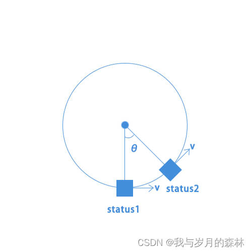
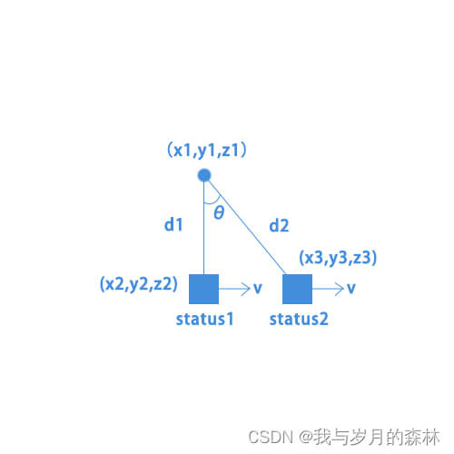
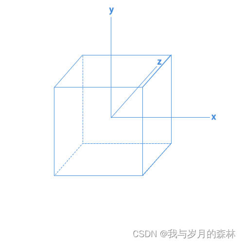
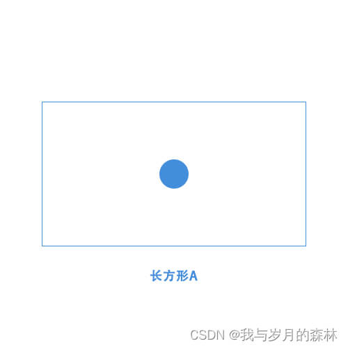
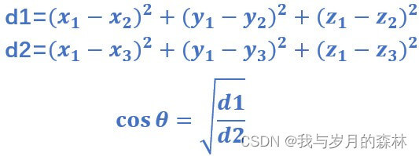

Unity摄像机对象锁定旋转运镜模拟
前言
在3D模式下如何模拟实现Unity摄像机对象锁定旋转运镜，可以分为两个部分，第一是实现对象锁定，第二是实现旋转运镜。对象锁定就是无论摄像机如何运动，始终保持对象位于摄像机成像区域的固定位置，旋转运镜就是使得摄像机围绕对象进行旋转运动。
分析

从图1我们可以把摄像机的运动定格到两个状态，status2可以看作status1一帧后摄像机的运动位置和状态，摄像机始终存在一个速度v并且要求这个速度始终沿着圆的切线方向，这样我们才能实现摄像机的旋转运镜，实际上我们只是给摄像机一个status1所示方向上的速度，之所以出现图1中status2的情景，是因为我们对摄像机进行了旋转，否则摄像机就会始终按照图2所示的方式运动。


图3所示是模拟了摄像机的坐标系，这个正方体就代表摄像机，图中的坐标系是摄像机的Local坐标系，z轴指向的是摄影区域的中点，我们结合图1和图3，假设给摄像机施加了一个x轴方向的速度v，那么我们就需要以y轴为轴线对摄像机进行旋转，使得z轴始终指向我们要锁定的游戏对象。
对于对象锁定，我们知道摄像机有一个摄像区域，位于这个区域内的物体才会显示到成像区域中，在Unity中这个区域可以是一个长方体也可以是一个四棱锥，我们将之投影到摄像机Local坐标系的x和y轴构成的二维平面上，在默认参数下则二者的成像区域都是一个长方形A（如图4），蓝色的圆就代表锁定的游戏对象。

对于摄像机的Local坐标系，无论我们怎么旋转摄像机，z轴都始终指向长方形A的中点，所以说到这里我想你应该想到了对象锁定的实现思路了，假设我们就让对象锁定在成像区域（即长方形A）的中点，那么我们就需要让摄像机进行旋转使得摄像机的Local坐标系的z轴指向我们要锁定的游戏对象。
对于旋转运镜，具体我们要让摄像机旋转多少角度，这里进行了一个近似处理，因为我们是每一帧进行一次更新，图2展示的是在没有进行旋转的情况下摄像机的运动，此时status2是status1的下一帧摄像机的位置和状态，在一帧的情况下图2中的status2和status1非常接近，就好比“微分思想”一样，如此我们可以将图2转换为一个直角三角形。假设锁定的游戏对象的世界坐标为(x1,y1,z1)，status1时摄像机的世界坐标为(x2,y2,z2)，status2时摄像机的世界坐标为(x3,y3,z3)，就有以下结论：

如果摄像机是按照图1所示逆时针运动，那么摄像机从status1到status2针对Local坐标系所需要旋转的角度就是-θ，我们已知cosθ的值，就可以计算出θ。
代码
1 | |
效果演示
总结
我们发现要实现Unity摄像机对象锁定旋转运镜模拟的代码很简单，主要就是摄像机的移动Move、角度更新AngleUpdate、摄像机的旋转Rotation，针对我这里为什么没有把三个方法的调用放在Update中而是放在了FixedUpdate中，起初我确实是放在Update中执行的，但是出现了Unity编辑器出现了错误提示，我们这里涉及到cosθ的计算，但是经过我的检测发现期间cosθ的值居然出现了大于1的情况，这显然是不正确的，Update是按照固定的帧率执行的，这并不符合我们运行的物理设备的实际帧率，所以就需要执行FixedUpdate对我们的执行频率进行修正。